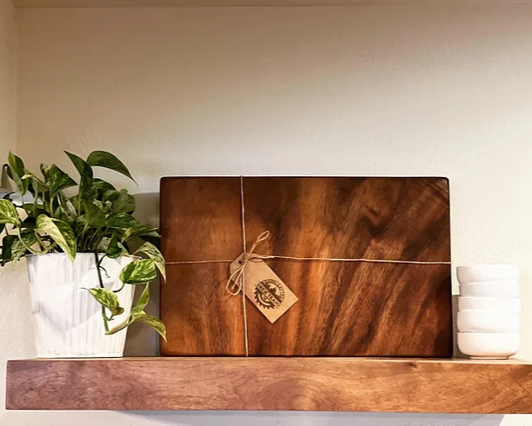
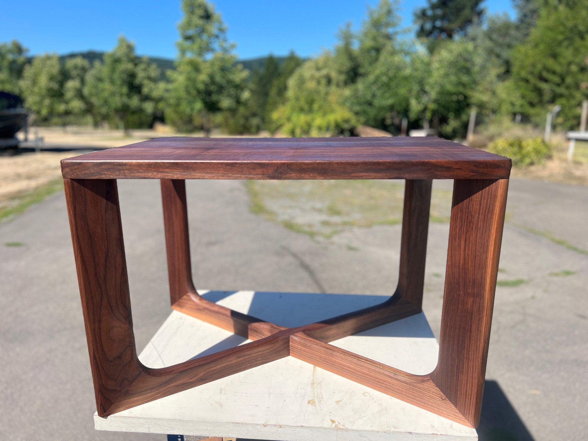
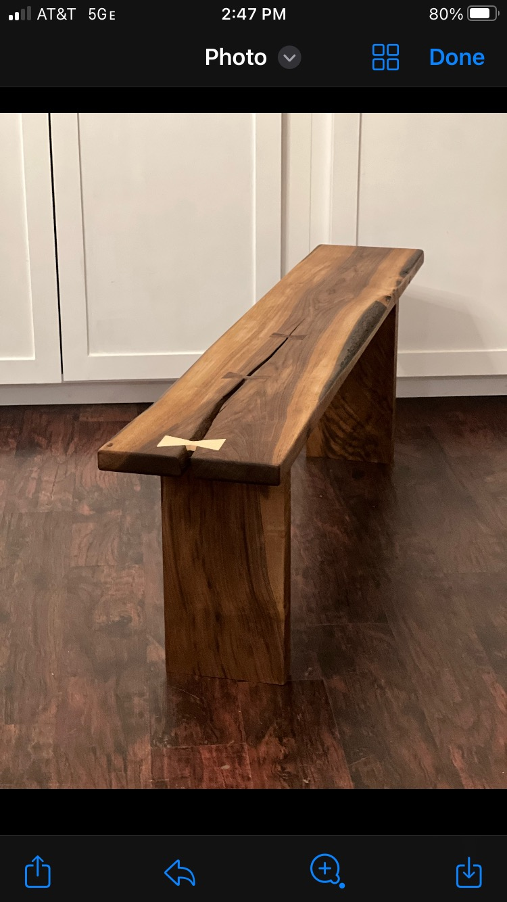

Restaurant ordering
Tacos Pirekua
A branded ordering experience for web and mobile, built on the BWE restaurant platform.
Websites and software built for the way each business works. A closer look at Studio37 is below.

Catalog, Stripe checkout, and a full admin back office for a custom woodworking shop.
A branded ordering experience for web and mobile, built on the BWE restaurant platform.
A fast, content-managed presence site for an exterior maintenance company.
Construction management software connecting leads, project work, payments, and records.
A product storefront that also gives the maker a practical way to run the business behind it.
Drew Trano builds custom cabinetry, furniture, and small goods by hand. The shop needed a site that could show the craft and sell smaller pieces online.
A product catalog and Stripe checkout, with an admin area for inventory, orders, quote leads, and product media.
We started with an interview and used regular feedback on working pages to shape the storefront around the shop.


We’ll start with what your business needs and build from there.